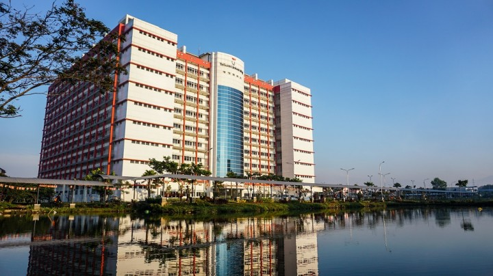

SEJARAH
Telkom University berdiri pada tanggal 14 Agustus 2013 berdasarkan Surat Keputusan Direktur Jenderal Pendidikan Tinggi Kemendikbud Nomor 309/E/0/2013. Universitas Telkom adalah Perguruan Tinggi Swasta yang diselenggarakan oleh Yayasan Pendidikan Telkom, merupakan penggabungan dari empat Perguruan Tinggi Swasta, yaitu Institut Teknologi Telkom (IT Telkom), Institut Manajemen Telkom (IM Telkom), Politeknik Telkom, dan Sekolah Tinggi Seni Rupa dan Desain Indonesia Telkom (STISI Telkom). Perjalanan sejarah Politeknik Telkom bermula dari 2 (dua) program pelatihan yang bergerak di bidang ICT, yaitu: Program Profesional STT Telkom, dan NIIT & Telkom Center. Kedua lembaga pelatihan ini kemudian bergabung dan membentuk lembaga pendidikan tinggi baru yang bergerak khusus di bidang vokasi. Pada tanggal 27 September 2007, Politeknik Telkom. Institut Teknologi Telkom (IT Telkom) sebelumnya dikenal sebagai STT Telkom yang merupakan sekolah tinggi pertama yang mengkhususkan diri dalam program studi Indonesia di bidang Teknologi Informasi dan Komunikasi (TIK). IT Telkom diproyeksikan untuk mempersiapkan para ahli di bidang TIK, bisnis yang terampil dan berwawasan luas, dalam menanggapi tuntutan industri TIK.
Visi
To be a research and entrepreneurial university in 2023, which actively involves the development of technology, science and art with information technology-based
Misi
-
To Organize and develop international standardized education with information technology-based.
-
To Develop, disseminate and apply internationally recognized technology, science and art.
-
To Utilize technology, science and art for the welfare and advancement of nation’s civilization through the development of entrepreneurial competencies.